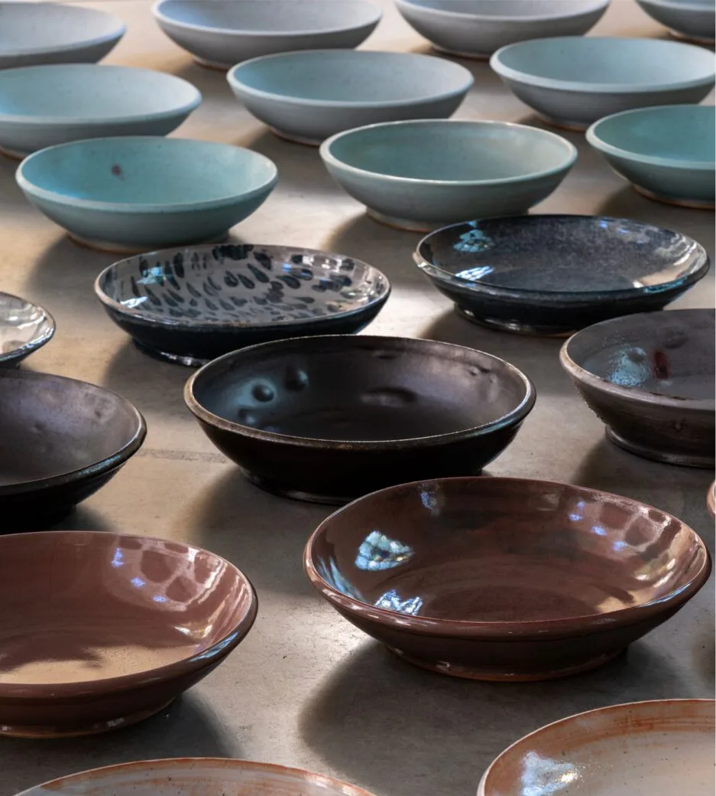

Niederrheinischer Kunstverein Wesel
Handgefertigte Schalen der Keramikerin Young-Jae Lee

Datum16. August – 31. Oktober 2026
OrtWillibrordi-Dom, Großer Markt, 46483 Wesel
PLATZHALTER – echter Flyer folgt